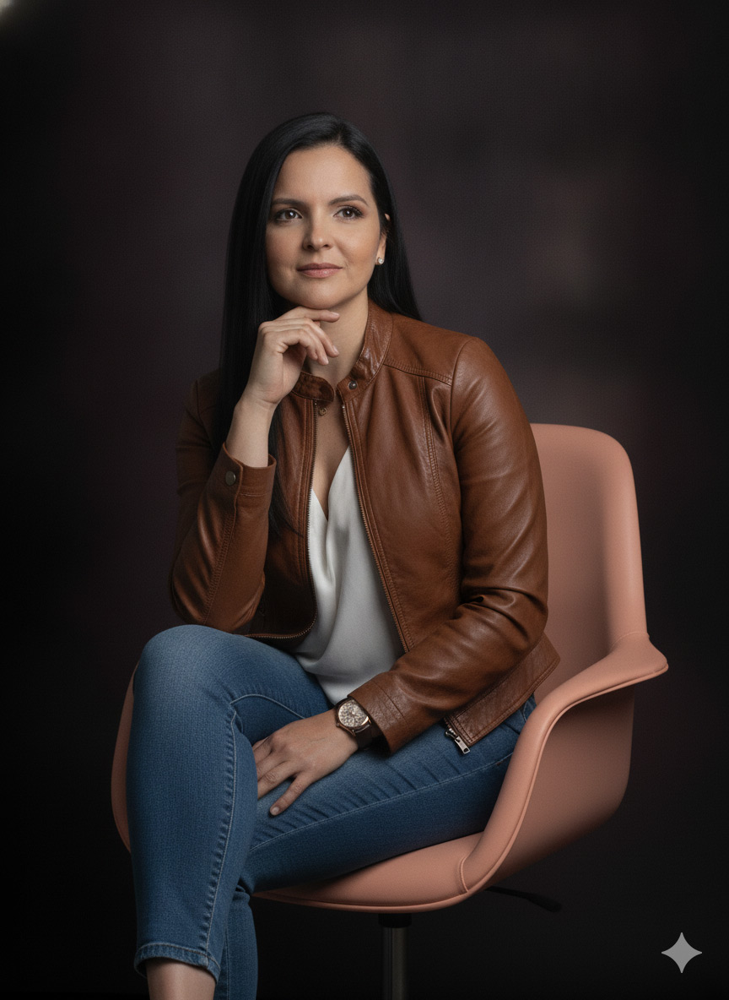
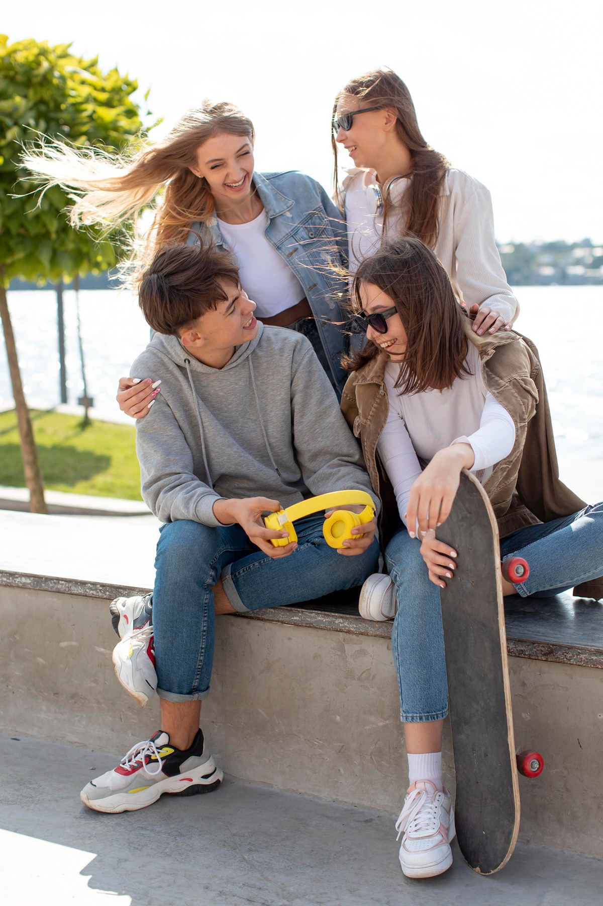

Para soñar
en grande.
Acompaño a adolescentes a confiar en sus capacidades — y a sus padres a guiarlos sin perder el rumbo. Sin juicios. Con herramientas reales.
↓ el amanecer empieza aquí abajo

Cada etapa me trajo hasta aquí.

Empezó con una pregunta simple
Soy psicóloga desde hace 15 años. Hace 8, una fundación me pidió diseñar un programa para adolescentes — y ahí encontré mi lugar. Hice una maestría en Psicología Clínica y, al notar el vacío de información en jóvenes y padres, otra en Sexología.

Algo le faltaba a la terapia tradicional
Tenía buenos resultados, pero sentía que faltaba un impulso extra. Me certifiqué como Coach con Fernando Celis en ILC Academy. Hablarle a un adolescente de potenciar sus capacidades — no de "arreglar" sus problemas — lo cambió todo. Su interés se volvió real.
Crecí creyendo que los sueños eran posibles
Crecí en un barrio humilde al norte de Maracaibo. Vi de cerca cómo la falta de guía cambia el destino de un joven. Mis padres me enseñaron a soñar en grande, y mi mentora, la Psicóloga Gina Pezzano, me enseñó a levantarme cada vez que sentía fracasar.

Volví para devolver lo que recibí
Estudié fuera y volví para trabajar por mi país. Hoy acompaño a adolescentes y padres en Venezuela y el mundo. Junto a esta consulta nació la Fundación Pienso Grande, para que más jóvenes se atrevan a soñar.